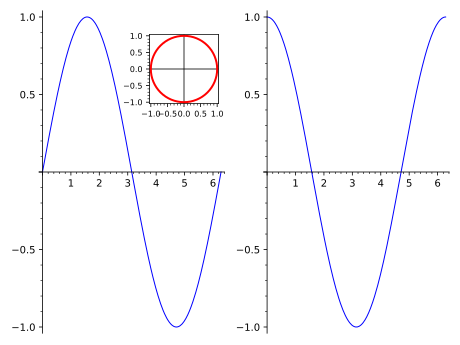

Graphics arrays and insets¶
This module defines the classes MultiGraphics and
GraphicsArray. The class MultiGraphics is the base class
for 2-dimensional graphical objects that are composed of various
Graphics objects, arranged in a given canvas.
The subclass GraphicsArray is for
Graphics objects arranged in a regular array.
AUTHORS:
Eric Gourgoulhon (2019-05-24): initial version, refactoring the class
GraphicsArraythat was defined in the modulegraphics.
-
class
sage.plot.multigraphics.GraphicsArray(array)¶ Bases:
sage.plot.multigraphics.MultiGraphicsThis class implements 2-dimensional graphical objects that constitute an array of
Graphicsdrawn on a single canvas.The user interface is through the function
graphics_array().INPUT:
array– either a list of lists ofGraphicselements (generic case) or a single list ofGraphicselements (case of a single-row array)
EXAMPLES:
An array made of four graphics objects:
sage: g1 = plot(sin(x^2), (x, 0, 6), axes_labels=['$x$', '$y$'], ....: axes=False, frame=True, gridlines='minor') sage: y = var('y') sage: g2 = streamline_plot((sin(x), cos(y)), (x,-3,3), (y,-3,3), ....: aspect_ratio=1) sage: g3 = graphs.DodecahedralGraph().plot() sage: g4 = polar_plot(sin(5*x)^2, (x, 0, 2*pi), color='green', ....: fontsize=8) \ ....: + circle((0,0), 0.5, rgbcolor='red', fill=True, alpha=0.1, ....: legend_label='pink') sage: g4.set_legend_options(loc='upper right') sage: G = graphics_array([[g1, g2], [g3, g4]]) sage: G Graphics Array of size 2 x 2
If one constructs the graphics array from a single list of graphics objects, one obtains a single-row array:
sage: G = graphics_array([g1, g2, g3, g4]) sage: G Graphics Array of size 1 x 4

We note that the overall aspect ratio of the figure is 4/3 (the default), which makes
g1elongated, while the aspect ratio ofg2, which has been specified with the parameteraspect_ratio=1is preserved. To get a better aspect ratio for the whole figure, one can use the optionfigsizein the methodshow():sage: G.show(figsize=[8, 3])

We can access individual elements of the graphics array with the square-bracket operator:
sage: G = graphics_array([[g1, g2], [g3, g4]]) # back to the 2x2 array sage: print(G) Graphics Array of size 2 x 2 sage: G[0] is g1 True sage: G[1] is g2 True sage: G[2] is g3 True sage: G[3] is g4 True
Note that with respect to the square-bracket operator,
Gis considered as a flattened list of graphics objects, not as an array. For instance,G[0, 1]throws an error:sage: G[0, 1] # py3 (error message is slightly different with Python 2) Traceback (most recent call last): ... TypeError: list indices must be integers or slices, not tuple
G[:]returns the full (flattened) list of graphics objects composingG:sage: G[:] [Graphics object consisting of 1 graphics primitive, Graphics object consisting of 1 graphics primitive, Graphics object consisting of 51 graphics primitives, Graphics object consisting of 2 graphics primitives]
The total number of Graphics objects composing the array is returned by the function
len:sage: len(G) 4
The square-bracket operator can be used to replace elements in the array:
sage: G[0] = g4 sage: G Graphics Array of size 2 x 2
-
append(g)¶ Append a graphics to the array.
Currently not implemented.
-
ncols()¶ Number of columns of the graphics array.
EXAMPLES:
sage: R = rainbow(6) sage: L = [plot(x^n, (x,0,1), color=R[n]) for n in range(6)] sage: G = graphics_array(L, 2, 3) sage: G.ncols() 3 sage: graphics_array(L).ncols() 6
-
nrows()¶ Number of rows of the graphics array.
EXAMPLES:
sage: R = rainbow(6) sage: L = [plot(x^n, (x,0,1), color=R[n]) for n in range(6)] sage: G = graphics_array(L, 2, 3) sage: G.nrows() 2 sage: graphics_array(L).nrows() 1
-
position(index)¶ Return the position and relative size of an element of
selfon the canvas.INPUT:
index– integer specifiying which element ofself
OUTPUT:
a 4-tuple
(left, bottom, width, height)giving the location and relative size of the element on the canvas, all quantities being expressed in fractions of the canvas width and height
EXAMPLES:
sage: g1 = plot(sin(x), (x, -pi, pi)) sage: g2 = circle((0,1), 1.) sage: G = graphics_array([g1, g2]) sage: G.position(0) # tol 5.0e-3 (0.025045451349937315, 0.03415488992713045, 0.4489880779745068, 0.9345951100728696) sage: G.position(1) # tol 5.0e-3 (0.5170637412999687, 0.20212705964722733, 0.4489880779745068, 0.5986507706326758)
-
class
sage.plot.multigraphics.MultiGraphics(graphics_list)¶ Bases:
sage.misc.fast_methods.WithEqualityById,sage.structure.sage_object.SageObjectBase class for objects composed of
Graphicsobjects.Both the display and the output to a file of
MultiGraphicsobjects are governed by the methodsave(), which is called by the rich output display manager, viagraphics_from_save().The user interface is through the functions
multi_graphics()(generic multi-graphics) andgraphics_array()(subclassGraphicsArray).INPUT:
graphics_list– a list of graphics along with their positions on the common canvas; each element ofgraphics_listis eithera pair
(graphics, position), wheregraphicsis aGraphicsobject andpositionis the 4-tuple(left, bottom, width, height)specifying the location and size of the graphics on the canvas, all quantities being in fractions of the canvas width and heightor a single
Graphicsobject; its position is then assumed to occupy the whole canvas, except for some padding; this corresponds to the default position(left, bottom, width, height) = (0.125, 0.11, 0.775, 0.77)
EXAMPLES:
A multi-graphics made from two graphics objects:
sage: g1 = plot(sin(x^3), (x, -pi, pi)) sage: g2 = circle((0,0), 1, color='red') sage: G = multi_graphics([g1, (g2, (0.2, 0.55, 0.3, 0.3))]) sage: G Multigraphics with 2 elements

Since no position was given for
g1, it occupies the whole canvas. Moreover, we note thatg2has been drawn overg1with a white background. To have a transparent background instead, one has to constructg2with the keywordtransparentset toTrue:sage: g2 = circle((0,0), 1, color='red', transparent=True) sage: G = multi_graphics([g1, (g2, (0.2, 0.55, 0.3, 0.3))]) sage: G Multigraphics with 2 elements
We can add a new graphics object to G via the method
append():sage: g3 = complex_plot(zeta, (-20, 10), (-20, 20), ....: axes_labels=['$x$', '$y$'], frame=True) sage: G.append(g3, pos=(0.63, 0.12, 0.3, 0.3)) sage: G Multigraphics with 3 elements

We can access the individual elements composing
Gwith the square-bracket operator:sage: print(G[0]) Graphics object consisting of 1 graphics primitive sage: G[0] is g1 True sage: G[1] is g2 True sage: G[2] is g3 True
G[:]returns the full list of graphics objects composingG:sage: G[:] [Graphics object consisting of 1 graphics primitive, Graphics object consisting of 1 graphics primitive, Graphics object consisting of 1 graphics primitive] sage: len(G) 3
-
append(graphics, pos=None)¶ Append a graphics object to
self.INPUT:
graphics– the graphics object (instance ofGraphics) to be added toselfpos– (default:None) 4-tuple(left, bottom, width, height)specifying the location and size ofgraphicson the canvas, all quantities being in fractions of the canvas width and height; ifNone,graphicsis assumed to occupy the whole canvas, except for some padding; this corresponds to the default position(left, bottom, width, height) = (0.125, 0.11, 0.775, 0.77)
EXAMPLES:
Let us consider a multigraphics with 2 elements:
sage: g1 = plot(chebyshev_T(4, x), (x, -1, 1), title='n=4') sage: g2 = plot(chebyshev_T(8, x), (x, -1, 1), title='n=8', ....: color='red') sage: G = multi_graphics([(g1, (0.125, 0.2, 0.4, 0.4)), ....: (g2, (0.55, 0.4, 0.4, 0.4))]) sage: G Multigraphics with 2 elements

We append a third plot to it:
sage: g3 = plot(chebyshev_T(16, x), (x, -1, 1), title='n=16', ....: color='brown') sage: G.append(g3, pos=(0.55, 0.11, 0.4, 0.15)) sage: G Multigraphics with 3 elements
We may use
appendto add a title:sage: title = text("Chebyshev polynomials", (0, 0), fontsize=16, ....: axes=False) sage: G.append(title, pos=(0.18, 0.8, 0.7, 0.1)) sage: G Multigraphics with 4 elements

See also
-
inset(graphics, pos=None, fontsize=None)¶ Add a graphics object as an inset.
INPUT:
graphics– the graphics object (instance ofGraphics) to be added as an insetpos– (default:None) 4-tuple(left, bottom, width, height)specifying the location and relative size of the inset on the canvas, all quantities being expressed in fractions of the canvas width and height; ifNone, the value(0.7, 0.7, 0.2, 0.2)is usedfontsize– (default:None) integer, font size (in points) for the inset; ifNone, the value of 6 points is used, unlessfontsizehas been explicitly set in the construction ofgraphics(in this case, it is not overwritten here)
OUTPUT:
instance of
MultiGraphics
EXAMPLES:
Let us consider a graphics array of 2 elements:
sage: G = graphics_array([plot(sin, (0, 2*pi)), ....: plot(cos, (0, 2*pi))]) sage: G Graphics Array of size 1 x 2

and add some inset at the default position:
sage: c = circle((0,0), 1, color='red', thickness=2, frame=True) sage: G.inset(c) Multigraphics with 3 elements

We may customize the position and font size of the inset:
sage: G.inset(c, pos=(0.3, 0.7, 0.2, 0.2), fontsize=8) Multigraphics with 3 elements

-
matplotlib(figure=None, figsize=None, **kwds)¶ Construct or modify a Matplotlib figure by drawing
selfon it.INPUT:
figure– (default:None) Matplotlib figure (classmatplotlib.figure.Figure) on whichselfis to be displayed; ifNone, the figure will be created from the parameterfigsizefigsize– (default:None) width or [width, height] in inches of the Matplotlib figure in casefigureisNone; iffigsizeisNone, Matplotlib’s default (6.4 x 4.8 inches) is usedkwds– options passed to thematplotlib()method of each graphics object constitutingself
OUTPUT:
a
matplotlib.figure.Figureobject; if the argumentfigureis provided, this is the same object asfigure.
EXAMPLES:
Let us consider a
GraphicsArrayobject with 3 elements:sage: G = graphics_array([plot(sin(x^k), (x, 0, 3)) ....: for k in range(1, 4)])
If
matplotlib()is invoked without any argument, a Matplotlib figure is created and contains the 3 graphics element of the array as 3 MatplotlibAxes:sage: fig = G.matplotlib() sage: fig <Figure size 640x480 with 3 Axes> sage: type(fig) <class 'matplotlib.figure.Figure'>
Specifying the figure size (in inches):
sage: G.matplotlib(figsize=(8., 5.)) <Figure size 800x500 with 3 Axes>
If a single number is provided for
figsize, it is considered to be the width; the height is then computed according to Matplotlib’s default aspect ratio (4/3):sage: G.matplotlib(figsize=8.) <Figure size 800x600 with 3 Axes>
An example of use with a preexisting created figure, created by
pyplot:sage: import matplotlib.pyplot as plt sage: fig1 = plt.figure(1) sage: fig1 <Figure size 640x480 with 0 Axes> sage: fig_out = G.matplotlib(figure=fig1) sage: fig_out <Figure size 640x480 with 3 Axes>
Note that the output figure is the same object as the input one:
sage: fig_out is fig1 True
It has however been modified by
G.matplotlib(figure=fig1), which has added 3 newAxesto it.Another example, with a figure created from scratch, via Matplolib’s
Figure:sage: from matplotlib.figure import Figure sage: fig2 = Figure() sage: fig2 <Figure size 640x480 with 0 Axes> sage: G.matplotlib(figure=fig2) <Figure size 640x480 with 3 Axes> sage: fig2 <Figure size 640x480 with 3 Axes>
-
plot()¶ Return
selfsinceselfis already a graphics object.EXAMPLES:
sage: g1 = plot(cos, 0, 1) sage: g2 = circle((0,0), 1) sage: G = multi_graphics([g1, g2]) sage: G.plot() is G True
-
position(index)¶ Return the position and relative size of an element of
selfon the canvas.INPUT:
index– integer specifiying which element ofself
OUTPUT:
a 4-tuple
(left, bottom, width, height)giving the location and relative size of the element on the canvas, all quantities being expressed in fractions of the canvas width and height
EXAMPLES:
sage: g1 = plot(sin(x^2), (x, 0, 4)) sage: g2 = circle((0,0), 1, rgbcolor='red', fill=True, axes=False) sage: G = multi_graphics([g1, (g2, (0.15, 0.2, 0.1, 0.15))]) sage: G.position(0) # tol 1.0e-13 (0.125, 0.11, 0.775, 0.77) sage: G.position(1) # tol 1.0e-13 (0.15, 0.2, 0.1, 0.15)
-
save(filename, figsize=None, **kwds)¶ Save
selfto a file, in various formats.INPUT:
filename– (string) the file name; the image format is given by the extension, which can be one of the following:.eps,.pdf,.png,.ps,.sobj(for a Sage object you can load later),.svg,empty extension will be treated as
.sobj.
figsize– (default:None) width or [width, height] in inches of the Matplotlib figure; if none is provided, Matplotlib’s default (6.4 x 4.8 inches) is usedkwds– keyword arguments, likedpi=..., passed to the plotter, seeshow()
EXAMPLES:
sage: F = tmp_filename(ext='.png') sage: L = [plot(sin(k*x), (x,-pi,pi)) for k in [1..3]] sage: G = graphics_array(L) sage: G.save(F, dpi=500, axes=False)
-
save_image(filename=None, *args, **kwds)¶ Save an image representation of
self. The image type is determined by the extension of the filename. For example, this could be.png,.jpg,.gif,.pdf,.svg. Currently this is implemented by calling thesave()method of self, passing along all arguments and keywords.Note
Not all image types are necessarily implemented for all graphics types. See
save()for more details.EXAMPLES:
sage: plots = [[plot(m*cos(x + n*pi/4), (x, 0, 2*pi)) ....: for n in range(3)] for m in range(1,3)] sage: G = graphics_array(plots) sage: G.save_image(tmp_filename(ext='.png'))
-
show(**kwds)¶ Show
selfimmediately.This method attempts to display the graphics immediately, without waiting for the currently running code (if any) to return to the command line. Be careful, calling it from within a loop will potentially launch a large number of external viewer programs.
OPTIONAL INPUT:
dpi– dots per inchfigsize– width or [width, height] of the figure, in inches; the default is 6.4 x 4.8 inchesaxes– boolean; ifTrue, all individual graphics are endowed with axes; ifFalse, all axes are removed (this overrides theaxesoption set in each graphics)frame– boolean; ifTrue, all individual graphics are drawn with a frame around them; ifFalse, all frames are removed (this overrides theframeoption set in each graphics)fontsize– positive integer, the size of fonts for the axes labels (this overrides thefontsizeoption set in each graphics)
OUTPUT:
This method does not return anything. Use
save()if you want to save the figure as an image.EXAMPLES:
This draws a graphics array with four trig plots and no axes in any of the plots and a figure width of 4 inches:
sage: G = graphics_array([[plot(sin), plot(cos)], ....: [plot(tan), plot(sec)]]) sage: G.show(axes=False, figsize=4)

Same thing with a frame around each individual graphics:
sage: G.show(axes=False, frame=True, figsize=4)

Actually, many options are possible; for instance, we may set
fontsizeandgridlines:sage: G.show(axes=False, frame=True, figsize=4, fontsize=8, ....: gridlines='major')